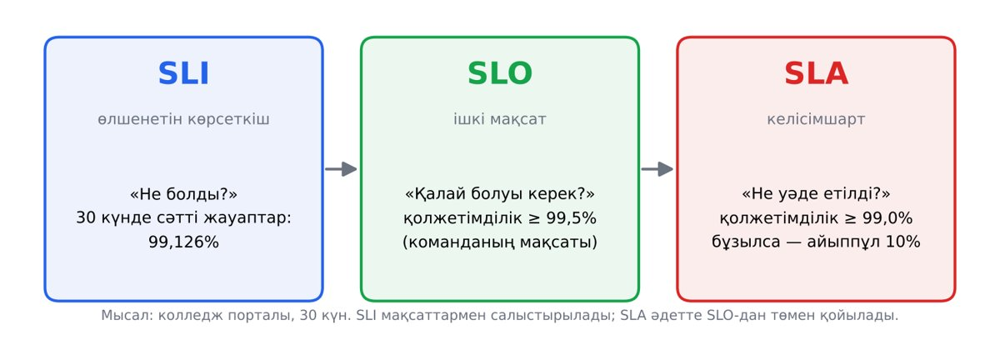
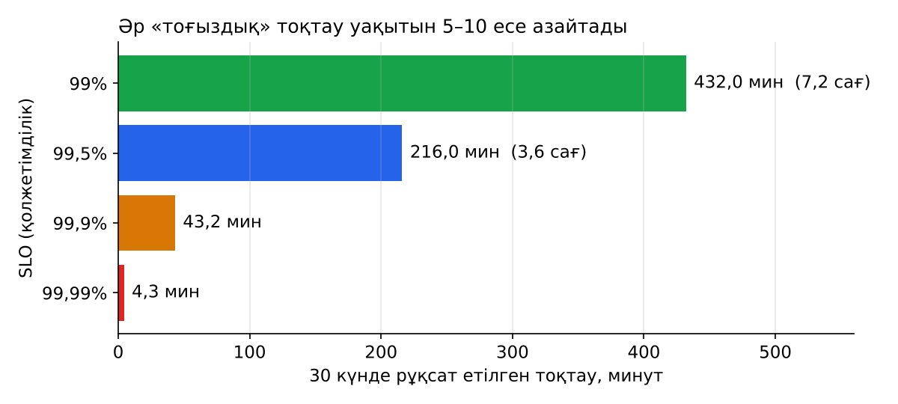

ПРАКТИКАЛЫҚ ЖҰМЫС №10
Қызмет көрсету сапасын автоматты тексеру (SLA)
SLA, SLO, SLI, жауап уақыты мен қателерді есептеу, қателер бюджеті, burn rate және қызметтерді үздіксіз тексеру.
1. SLI, SLO, SLA
Қызмет «жақсы жұмыс істеді ме?» деген сұраққа сезіммен емес, санмен жауап беру керек. Ол үшін үш ұғым қолданылады:
SLI — индикатор
Нақты өлшенген мән. Мысалы: соңғы 30 күндегі сәтті сұраулар үлесі = 99,87%.
SLO — мақсат
Команданың ішкі мақсаты. Мысалы: 30 күнде қолжетімділік ≥ 99,9%.
SLA — келісім
Клиентпен келісімшарт: мақсат және бұзылса не болады (айыппұл, өтемақы). Мысалы: ≥ 99,5%, әйтпесе 15% қайтарылады.

2. SLI түрлері
| SLI | Формула | Мысал |
|---|---|---|
| Қолжетімділік | (барлық сұраулар − 5xx қателер) / барлық сұраулар | 99,87% |
| Жауап уақыты (latency) | 300 мс-тан жылдам жауаптар / барлық сұраулар | 97,1% сұрау < 300 мс |
| Қателер үлесі | 5xx / барлық сұраулар | 0,13% |
| Өнімділік (throughput) | секундтағы сұраулар | 120 RPS |
5xx (500, 502, 503) — сервердің кінәсі, SLI-ге кіреді. 4xx (404, 401) — клиенттің қатесі (қате мекенжай, құпиясөз), әдетте SLI-ге кірмейді.
3. «Тоғыздықтар» және рұқсат етілген тоқтау уақыты
| SLO | 30 күнде тоқтауға болады | Жылына |
|---|---|---|
| 99% | 7 сағ 12 мин | 3,65 күн |
| 99,5% | 3 сағ 36 мин | 1,8 күн |
| 99,9% («үш тоғыз») | 43 мин | 8,8 сағ |
| 99,99% («төрт тоғыз») | 4 мин 19 с | 53 мин |
Формула: (1 − SLO) × 30 × 24 × 60 минут. Әр қосымша «тоғыз» қызметті 10 есе қымбат етеді, сондықтан 100% — дұрыс мақсат емес.

4. Жауап уақытын қалай өлшейміз?
Орташа мән алдайды: 95 сұрау 50 мс, 5 сұрау 4 секунд болса, орташа = 250 мс — «жақсы» сияқты, бірақ әр 20-шы пайдаланушы 4 секунд күтеді. Сондықтан перцентильдер қолданылады:
- p50 (медиана) — сұраулардың жартысы осыдан жылдам;
- p95 — 95%-ы осыдан жылдам; «баяу» пайдаланушылардың тәжірибесі;
- p99 — ең баяу 1%.
Мониторинг жүйелері (Prometheus) әр сұрауды сақтамайды — жауап уақытын гистограмма бакеттеріне санайды:
le_100 ≤ 100 мс : 612
le_300 ≤ 300 мс : 361
le_1000 ≤ 1000 мс : 21
gt_1000 > 1000 мс : 6 → 97,3% сұрау 300 мс-тан жылдам
5. Қателер бюджеті және burn rate
Қателер бюджеті — SLO рұқсат ететін «жаман» сұраулар саны:
бюджет = (1 − SLO) × барлық сұраулар
мысалы: (1 − 0,995) × 2 000 000 = 10 000 жаман сұрау / 30 күнБюджет қалса — жаңа функциялар шығаруға болады. Бюджет бітсе — команда жаңалықтарды тоқтатып, тұрақтылыққа көшеді. Бұл — SRE (Site Reliability Engineering) тәсілі.
Burn rate — бюджеттің жұмсалу жылдамдығы:
burn rate = (соңғы кезеңдегі қате үлесі) / (1 − SLO)
1,0 → бюджет дәл 30 күн соңында бітеді
14,4 → бюджеттің 2%-ы 1 сағатта, бәрі ~2 күнде бітеді| Ескерту | Терезе | Шарт | Әрекет |
|---|---|---|---|
| PAGE | 1 сағат | burn rate ≥ 14,4 | кезекшіге дереу хабарлау |
| TICKET | 6 сағат | burn rate ≥ 6 | жұмыс уақытында тексеру |
Неге 30 күндік SLI жеткіліксіз? Ол «баяу»: қызмет дәл қазір бұзылып жатса да, 30 күндік орташа әлі жақсы көрінеді. Burn rate қазіргі жағдайды көрсетеді.


6. SLA-ны үздіксіз тексеру
Сервер метрикалары
Нақты пайдаланушылардың барлық сұраулары. Бірақ сервер мүлдем құласа — метрика да жоқ.
Синтетикалық тексеру
Скрипт белгілі аралықпен сұрау жібереді (health check). Тоқтауды бірден көреді, бірақ тек бір жолды тексереді.
# 1-терминал: тексеруге арналған қызмет
python test_server.py --errors 0.02 --slow 0.05
# 2-терминал: үздіксіз тексеру
python check_sla.py --interval 2 --count 40
# cron: әр 10 минут сайын 30 рет тексеріп, SLA есебін жаңарту
*/10 * * * * cd ~/10_sla_monitor && python3 check_sla.py --interval 10 --count 30Нақты құралдар: Prometheus + Blackbox exporter, Grafana, Uptime Kuma, UptimeRobot. Біздің скрипттер — олардың шағын, түсінікті үлгісі.

Бейне дыбыссыз, субтитрлері бар (1:26).
Қалай іске қосу керек:
# 1. архивті ашып, VS Code-та File → Open Folder → 10_sla_monitor
# 2. VS Code ішінде терминал ашыңыз: Terminal → New Terminal
# 3. README.txt ішіндегі командаларды орындаңыз, мысалы:
python main.py # Mac-та: python3 main.py| Мақсаты | Қызмет сапасын SLI/SLO/SLA бойынша өлшеп, бұзылуды автоматты анықтайтын құрал жазу. |
| Оқыту нәтижелері | 1. SLA/SLO/SLI метрикаларын сипаттайды. 2. Сервис жауабы мен қателерді есептеуді түсіндіреді. 3. SLA-ны үздіксіз тексеретін скрипт жазады. |
| Уақыты | 200 минут өзіндік жұмыс (6 сағат, 3 жұп) |
| Нәтиже | sla_tools.py (9 функция), жетілдірілген check_sla.py, alerts.log, sla_report.html, 6 тесттің нәтижесі |
| Қажетті құралдар | Компьютер, VS Code (екі терминал), Python 3.10+, 10_sla_monitor қалтасы, браузер |
Шарты
Колледжде үш қызмет бар: portal, journal_api, lms. data/metrics.csv — 30 күндік 5 минуттық метрикалар («қазір» = 2026-11-08 23:55). Директорға SLO мен SLA орындалғанын, инциденттердің уақытын және ескерту уақытында шыққанын дәлелдейтін құрал керек. Есептеулер — sla_tools.py файлында, үздіксіз тексеру — check_sla.py-де. python sli.py тек тексеру үшін қолданылады.
Жұмысқа дайындық
cd 10_sla_monitor
python gen_metrics.py # Mac: python3 gen_metrics.py
# жаңа файл: sla_tools.py1-жұп
1-қадам — талдау (20 мин)
- services.json бойынша үш қызметтің SLO, SLA, айыппұлын кестеге жазыңыз.
downtime_minutes(slo, days=30)жазып, 99; 99,5; 99,9; 99,99% үшін тоқтау уақытын есептеңіз (минут, 1 таңба).- Неге SLA < SLO және неге 4xx SLI-ге кірмейді — әрқайсысына бір сөйлем.
2-қадам — SLI функциялары (45 мин)
load(path="data/metrics.csv", service=None)— жолдарды оқып, сандарды int-ке, уақытты datetime-ке (r["t"]) айналдырады.sli(rows)— қолжетімділік, %, 3 таңба.latency_sli(rows, limit_ms)— limit_ms-тен жылдам жауаптар, %, 2 таңба (100 / 300 / 1000).p95_bucket(rows)— 95% сұрау кіретін бірінші бакет: «≤100», «≤300», «≤1000» немесе «>1000».- Үш қызметтің 30 күндік мәндерін python sli.py нәтижесімен салыстырыңыз — дәл сәйкес болуы керек.
2-жұп
3-қадам — инциденттер және бюджет (40 мин)
bad_days(rows, slo, lat_ms, lat_target)— SLO бұзылған күндердің тізімі: (күн, «қателер» / «баяулық»).error_budget(rows, slo)— (бюджет: int, жұмсалған %: round).- Үш қызмет бойынша инциденттер кестесін толтырыңыз: күн → қызмет → себеп → 5xx.
- 21.10 тоқтауы порталдың 30 күндік бюджетінің неше пайызын алды? Есептеу жолын жазыңыз.
4-қадам — burn rate және ескерту (35 мин)
window(rows, now, hours)— (now − hours; now] аралығындағы жолдар.burn_rate(rows, slo)— 2 таңба.first_alert(rows, slo, start, end, min_requests=0)— 5 минут қадаммен 1 сағаттық burn rate ≥ 14,4 болған алғашқы уақыт, «YYYY-MM-DD HH:MM».- LMS (08.11) мен портал (21.10) үшін алғашқы PAGE уақытын табыңыз. LMS-тің 30 күндік SLO-сы орындалып тұрса да, неге PAGE?
- journal_api бойынша 30 күн іздегенде 10.10 00:05-те дабыл шығады. Неге бұл жалған? min_requests=500 шартымен нақты алғашқы PAGE уақытын табыңыз.
3-жұп
5-қадам — үздіксіз тексеру (40 мин)
- check_sla.py-ге қосыңыз: қатарынан 3 сәтсіз тексеру — «ҚЫЗМЕТ ТОҚТАДЫ», кейінгі алғашқы сәтті тексеру — «ҚАЛПЫНА КЕЛДІ, тоқтау N с».
- Әр ескертуді alerts.log-қа жазыңыз: уақыт; қызмет; себеп. Бір қызметтің бір ескертуі 60 секунд ішінде қайталанбасын.
- Тексеріңіз: 1-терминалда
python test_server.py, 2-терминалдаpython check_sla.py --interval 2 --count 60 --window 10; браузерде /admin/break → 20 с → /admin/fix. - Терминал мен alerts.log скриншотын есепке салыңыз; тоқтау ұзақтығын probes.csv-мен салыстырыңыз.
6-қадам — тестілеу және есеп (20 мин)
Төмендегі тексерулерді test_sla.py файлына көшіріп іске қосыңыз. Әр тестті «өтті / өтпеді» деп белгілеңіз, қателерді түзетіңіз; бастапқы және соңғы сәтті тест санын жазыңыз. Соңында python sli.py --html есебін жасаңыз.
from datetime import datetime as dt
from sla_tools import *
P = load(service="portal")
J = load(service="journal_api")
L = load(service="lms")
day = [r for r in P if r["time"].startswith("2026-10-21")]
assert downtime_minutes(99.9) == 43.2 # Т1
assert sli(day) == 82.826 # Т2
days = [d for d, _ in bad_days(J, 99.9, 300, 95.0)]
assert days == ["2026-10-29", "2026-10-30"] # Т3
assert error_budget(P, 99.5) == (10061, 175) # Т4
w = window(L, dt(2026, 11, 8, 22, 0), 1)
assert burn_rate(w, 99.0) == 17.92 # Т5
t = first_alert(L, 99.0, dt(2026, 11, 8), dt(2026, 11, 8, 23, 55))
assert t == "2026-11-08 21:45" # Т6
print("6/6 тест өтті")Есепке: sla_tools.py коды, 6 тесттің нәтижесі (бастапқы / соңғы), инциденттер кестесі, алғашқы PAGE уақыттары, check_sla.py өзгерістері, alerts.log, sla_report.html скриншоты.
Бағалау дескрипторлары
- A · 95–100 — ұғымдар ажыратылған, тоқтау уақыты дұрыс; барлық функция жазылған; 6/6 тест; check_sla.py тоқтау мен қалпына келуді уақытымен көрсетеді, alerts.log қайталаусыз; жалған дабылдың себебі дәлелденген.
- A− · 90–94 — барлығы жұмыс істейді, 6/6 тест; түсіндірмеде шағын ескертулер.
- B+ · 85–89 — 5/6 тест; инциденттер мен бюджет дұрыс; alerts.log толық емес.
- B · 80–84 — 5/6 тест; first_alert бар, min_requests шарты жоқ; check_sla.py жетілдіруі ішінара.
- B− · 75–79 — 4/6 тест; SLI мен инциденттер дұрыс; burn rate немесе check_sla.py бөлігі толық емес.
- C+ · 70–74 — 4/6 тест; SLI мен бюджет есептелген; ескерту бөлімі тек басталған.
- C · 65–69 — 3/6 тест; load, sli, latency_sli жұмыс істейді; инциденттер ішінара.
- C− · 60–64 — 2/6 тест; тоқтау уақыты мен бір қызметтің SLI-і есептелген.
- D+ · 55–59 — ұғымдар ажыратылған; sla_tools.py басталған, тесттер өтпейді.
- D · 50–54 — ұғымдар аталған; бір функция жазылған.
- F · 0–49 — SLA/SLO/SLI түсінігі жеткіліксіз және/немесе тексерілетін бағдарлама жоқ.
Бақылау сұрақтары
- SLA, SLO және SLI айырмашылығы неде?
- SLO 99,9% болса, 30 күнде қанша минут тоқтауға болады?
- Неге жауап уақытын бағалауда орташа мән емес, перцентиль қолданылады?
- Қателер бюджеті бітсе, команда не істеуі керек?
- Burn rate 14,4 нені білдіреді? Неге екі терезе (1 сағ / 6 сағ) қолданылады?
- Аз трафикте неге жалған дабыл шығады және оны қалай болдырмайды?
- Синтетикалық тексеру мен сервер метрикаларының айырмашылығы қандай?
Журнал файлдары берілген. ls, cat, grep, sort, uniq, cut командаларымен тергеу жүргізіп, жауапты submit flag{...} түрінде жіберіңіз. Командалар тізімі: help.
Есепті (docx, pdf немесе zip) жүктеңіз немесе GitHub / Google Drive сілтемесін қалдырыңыз. Баға мен оқытушының пікірі кабинетте шығады.